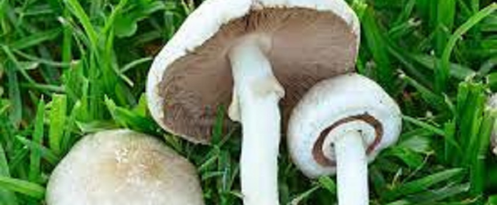

Amantina Muscaria

Perteneciente a la familia de hongos alucinógenos Strophariaceae, también se le conoce popularmente como “la piedra filosofal”. El descubrimiento de esta especie se remonta a finales de la década de los 70, cuando se encontró un espécimen en Tampa (Florida), el cual fue clonado para poder ser comercializado por todo el mundo. De manera...
Paxilus involutus

Es muy parecido al hongo de pino, que sí es comestible. La principal diferencia es que el comestible tiene poros en la parte inferior del sombrero, mientras que el tóxico tiene laminillas. El cuerpo fructífero puede ser de hasta 6 centímetros de alto, la forma del sombrero (píleo) es convexo cuando son jóvenes y cuando madura toma la forma de un embudo, son de color pardusco, amarillentos y pueden tener hasta 12 centímetros de ancho, la superficie del sombrero es suave y lisa, pegajosa si esta húmeda. Se encuentran en las zonas húmedas de los bosques de coníferas, a finales del verano y durante el otoño en el hemisferio norte, en toda Europa y Asia, América del Norte, con registros de Japón y en el este de Anatolia en Turquía.
Chlorophyllum molybdites

Produce muchas intoxicaciones porque se lo confunde con Macrolepiota, que es comestible. Para distinguirlo hay que colocarlo sobre un papel de diario por unas horas para que expulse sus esporas (como un polvillo). Si son verdes, es la especie tóxica. La especie comestible expulsa esporas blancas. Es una especie que fructifica de forma rápida después de las lluvias, tanto en verano como en otoño. Sale en campas, pastizales y zonas ruderales, incluso en jardines. Está muy extendida por el continente americano, desde California hasta Argentina, en otros continentes sus referencias son casuales.
Agaricus
Es una de las especies a la cual pertenece el champiñón, pero también tiene ejemplares tóxicos en Córdoba. Se diferencian por su olor fuerte y por el color amarillo. El comestible es blanco. Las especies de este género presentan generalmente fructificaciones carnosas, mayoritariamente de tamaño medio a grande; el sombrero es hemisférico inicialmente, después convexo y finalmente más o menos aplanado o ligeramente deprimido, de color blanquecino o parduzco.